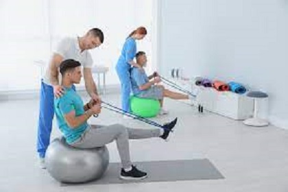
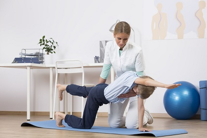

1.physical therapy sessions
Physiotherapy sessions: we do appropriate exercises for the injured,
some survivors of traffic accidents lose the ability to carry out their daily activities,
or those with strokes and heart attacks cannot perform their physical functions
The most commonly used cases in physical medicine and rehabilitation
- Aching pain in the neck, back, shoulders, elbow, wrist - hand, waist, hip, knee, foot, ankle, and heel area
(eg meniscus, heel spur, joint calcification),
waist and neck hernia
- Rheumatic diseases that cause joint pain and stiffness of movement
(osteoarthritis, osteoarthritis, rheumatoid arthritis, ankylosing spondylitis)
- fibromyalgia, myalgia, tennis elbow, trigger finger, cellulite, etc.
- soft tissue diseases,
nerve impingement such as carpal tunnel syndrome, carpal tunnel syndrome, sciatic nerve compression,
restless leg syndrome.
- Neck, back, and lower back pain due to postural disorders.
- curvatures of the spine called scoliosis, kyphosis (humpback),
In osteoporosis, known as osteoporosis,
Facial paralysis
In hemiplegia called stroke (cerebral hemorrhage or paralysis due to blockage of cerebral vessels)
Spinal cord injuries caused by work or traffic accidents (paraplegia)
Congenital or later paralysis and spasticity in children (spastic cerebral palsy)
- spasticity Muscle weakness, joint pain,
and limitation of joint movement that may develop due to fractures and other bone causes,
Before and after prosthetic surgery
before and after hand surgeries.
- Sports injuries (anterior cruciate ligament rupture, meniscus injuries, etc.)
- Spine problems due to aging lymphedema.
*Most of the physiotherapy methods used
| Hot treatments---> |
infrared, hot pack, paraffin |
| Cold treatments---> |
cold pack, cryotherapy |
| Current Electrical Therapies---> |
TENS, Interference, Neuromuscular Electrical Stimulation (Compex)
ultrasound therapy, |
| Vacuum processing methods---> |
vacuum interference |
| Laser therapy---> |
laser therapy (high intensity laser) |
| Air Compress---> |
Lemfopress (for lymphatic drainage) |
| Specific exercise therapies---> |
(tool and non-motorized exercises) |
Physiotherapy is carried out by a physiotherapist and electrotherapist
in accordance with the physiotherapy program, recommendations and warnings,
organized by the physiotherapist and rehabilitation specialist for each patient.
Various methods of physiotherapy are applied in sessions
lasting 1-1.5 hours and the average number of sessions is between 15-20.
Rehabilitation is at least 30 sessions in sessions lasting at least one hour.


**TO BOOK CLICK HERE**